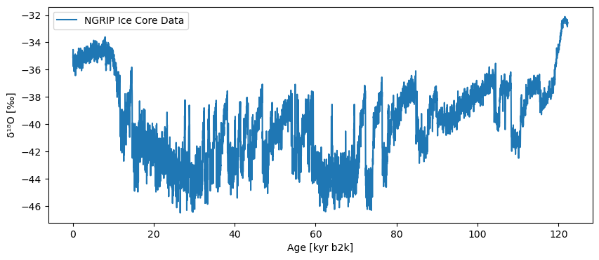
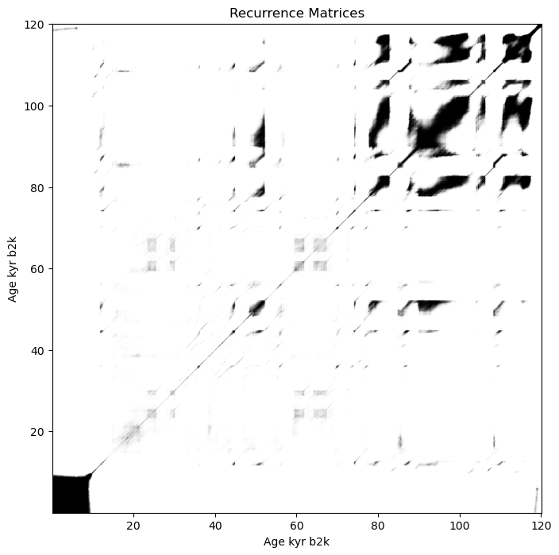
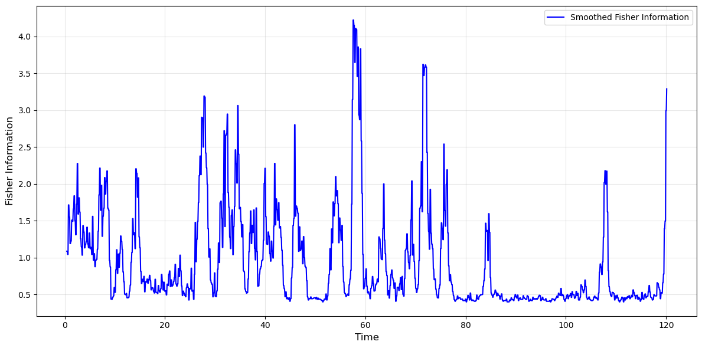
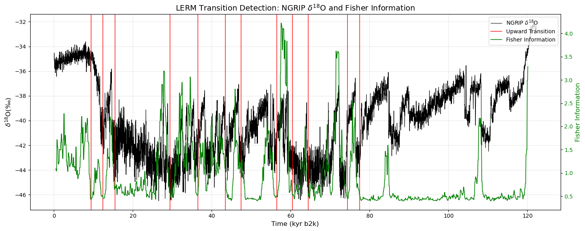
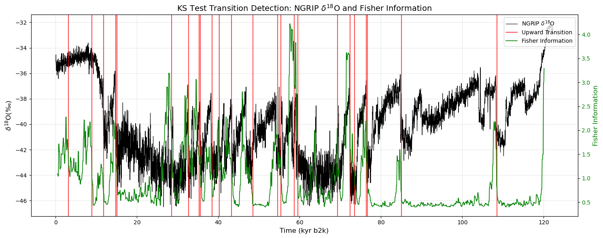

# Import libraries and packages
import ammonyte as amt
import pandas as pd
import numpy as np
import matplotlib.pyplot as plt
import copy Detecting Tipping Points with Ammonyte LERM Method
Load the NGRIP Dataset for Tipping Point Analysis
Dataset Overview
The North Greenland Ice Core Project (NGRIP) dataset contains high-resolution paleoclimate proxy data from Greenland ice cores. This dataset is particularly valuable for studying abrupt climate transitions and tipping points in the Earth’s climate system.
Key Dataset Features: - Proxy Variable: \(\mathrm{\delta^{18}O}\) isotope measurements - Units: per mil - Time Scale: Thousands of years before present (kyr b2k)
ngrip = amt.Series.from_csv('../ammonyte/data/NGRIP.csv')Time axis values sorted in ascending order
Time axis values sorted in ascending order# Store original arrays for reuse
ngrip_time_original = ngrip.time.copy()
ngrip_value_original = ngrip.value.copy()Dataset Metadata Summary
Display key metadata information from the loaded NGRIP time series to understand the dataset characteristics.
# The metadata
print(f"Loaded NGRIP dataset: {ngrip.label}")
print(f"Time range: {ngrip.time.min():.2f} - {ngrip.time.max():.2f} {ngrip.time_unit}")
print(f"Number of data points: {len(ngrip.time)}")
print(f"Value range: {ngrip.value.min():.2f} - {ngrip.value.max():.2f} {ngrip.value_unit}")Loaded NGRIP dataset: NGRIP Ice Core Data
Time range: 0.05 - 122.27 kyr b2k
Number of data points: 6112
Value range: -46.50 - -32.11 ‰NGRIP \(\mathrm{\delta^{18}O}\) Record Visualization
The plot below shows the complete NGRIP ice core record, where: - X-axis: Time in thousands of years before present (kyr b2k) - Y-axis: \(\mathrm{\delta^{18}O}\) isotope values in per mil - Interpretation: More negative values indicate colder conditions
# Plot NGRIP series
ngrip.plot() (<Figure size 1000x400 with 1 Axes>,
<Axes: xlabel='Age [kyr b2k]', ylabel='δ¹⁸O [‰]'>)
Main LERM Analysis
This section demonstrates the complete LERM workflow for detecting climate transitions in the NGRIP dataset. We use block_size=2 for smoothing Fisher Information throughout this analysis.
Workflow Steps: 1. Time Delay Embedding - Transform 1D time series into multi-dimensional phase space 2. Recurrence Network Construction - Build network representation of climate dynamics 3. Fisher Information Computation - Extract dynamical information via Laplacian Eigenmaps 4. Smoothing - Apply block averaging to reduce noise (block_size=2) 5. Visualization - Display smoothed Fisher Information 6. Transition Detection - Apply LERM method to identify climate transitions 7. Results Visualization - Show detected transitions on both Fisher Information and NGRIP data 8. Alternative Method - Apply KS test for comparison
Step 1: Time Delay Embedding
Phase Space Reconstruction
To apply the LERM method, we first transform the 1-dimensional time series into a multi-dimensional phase space.
Key Parameters: - m (embedding dimension): The number of dimensions in the reconstructed phase space - tau (time delay): The lag between successive coordinates in the embedded space - Automatically computed to optimize reconstruction - Represents the decorrelation timescale of the system
#series to time embedded series
m = 12
NGRIP_td = amt.TimeEmbeddedSeries(ngrip , m)
NGRIP_td.tau9Step 2: Recurrence Network Construction
Finding the Optimal Epsilon Parameter
Before constructing the recurrence network, we need to determine the optimal epsilon (ε) value, which defines the neighborhood radius for connecting points in the phase space. The algorithm iteratively adjusts epsilon until the recurrence network achieves the target density.
Method: Adaptive epsilon search to achieve target network density
Parameters: - eps: Initial epsilon value to start the search (1.0) - target_density: Desired density of the recurrence network (0.05 = 5%) - tolerance: Acceptable deviation from target density (0.01 = 1%, meaning it Stops search when density is within [4%, 6%]) - amp: Amplitude scaling factor for the search (30, Controls the step size during epsilon optimization)
NGRIP_epsilon = NGRIP_td.find_epsilon(eps=1,target_density=.05,tolerance=.01,amp=30)Initial density is 0.0003
Initial density is not within the tolerance window, searching...
Epsilon: 2.4915, Density: 0.0126
Epsilon: 3.6123, Density: 0.0335
Epsilon: 4.1062, Density: 0.0464
Epsilon: 4.1062, Density: 0.0464.Recurrence Matrices Visualization
Extracting and Visualizing the Recurrence Network
What is a Recurrence Matrices? - A binary Matrices where entry (i,j) = 1 if points i and j are “close” in phase space (within epsilon distance)
Interpretation - Dense black regions: Stable climate states with high recurrence (stadials or interstadials) - White/sparse regions: Transitional periods, rapid changes, or unique states Tipping points occur here - Black diagonal lines: Similar evolution patterns at different times - Black vertical/horizontal lines: Frequently recurring climate states
NGRIP_rm = NGRIP_epsilon['Output']
# plot the recurrence Matrices
NGRIP_rm.plot(title = 'Recurrence Matrices')(<Figure size 800x800 with 1 Axes>,
<Axes: title={'center': 'Recurrence Matrices'}, xlabel='Age kyr b2k', ylabel='Age kyr b2k'>)
Step 3: Fisher Information Computation
Extracting Dynamical Information from the Recurrence Network
The Laplacian Eigenmaps method computes Fisher Information from the recurrence network using a sliding window approach. Fisher Information quantifies how much information the system’s trajectory carries about its underlying dynamics and serves as an early warning signal for tipping points.
Parameters: - w_size: Window size (20 time steps) - Size of the sliding window for local Fisher Information computation - w_incre: Window increment (4 time steps) - Step size for moving the window along the time series
Fisher Information Interpretation: - High Fisher Information: System is near a critical transition - Low Fisher Information: System is stable
NGRIP_lp = NGRIP_rm.laplacian_eigenmaps(w_size=20,w_incre=4)Step 4: Smoothing the Fisher Information Series
The raw Fisher Information signal can contain high-frequency noise that may lead to false positive transition detections. We apply block averaging to smooth the series while preserving the timing and magnitude of genuine transitions.
Method: Block averaging with sliding window
Parameters: - block_size: Size of the averaging window (2 time steps)
NGRIP_lp_smooth = amt.utils.fisher.smooth_series(series=NGRIP_lp, block_size=2)Step 5: Visualizing Smoothed Fisher Information
This visualization displays the smoothed Fisher Information.
Plot elements: - Blue line: Smoothed Fisher Information signal - X-axis: Time in kyr b2k - Y-axis: Fisher Information values
fig, ax = plt.subplots(figsize=(12,6))
NGRIP_lp_smooth.plot(ax=ax, color='blue',linewidth=1.5, label = 'Smoothed Fisher Information')
ax.set_xlabel('Time',fontsize=12)
ax.set_ylabel('Fisher Information',fontsize=12)
ax.grid(True, alpha=0.3)
plt.tight_layout()
plt.show()
Step 6: Detecting Climate Transitions with LERM
The lerm_transitions() method performs deterministic transition detection on the Fisher Information series. This is a key distinction:
- What’s being analyzed: The smoothed Fisher Information (
NGRIP_lp_smooth) - Why: Fisher Information is sensitive to dynamical changes and serves as an indicator of system transitions
- Output: Specific times where the system crosses critical thresholds
The LERM method identifies transitions by: 1. Computing adaptive thresholds from the Fisher Information distribution - Upper threshold (95th percentile): Marks significant upward changes - Lower threshold (5th percentile): Marks significant downward changes 2. Detecting crossings where Fisher Information exceeds these bounds 3. Classifying each transition as: - Upward (+1): System moving toward instability or rapid change - Downward (-1): System returning to stability
transitions = NGRIP_lp_smooth.lerm_transitions()
print(transitions)Deterministic Transition Detection Results - NGRIP Ice Core Data
================================================================
+----------+---------------------+----------------+------------------+---------------------+
| Method | Total Transitions | Upward Jumps | Downward Jumps | Series Label |
+==========+=====================+================+==================+=====================+
| LERM | 24 | 12 | 12 | NGRIP Ice Core Data |
+----------+---------------------+----------------+------------------+---------------------+
Transition Details:
1. Time: 9.43 kyr b2k, Direction: Upward
2. Time: 10.43 kyr b2k, Direction: Downward
3. Time: 12.43 kyr b2k, Direction: Upward
4. Time: 13.43 kyr b2k, Direction: Downward
5. Time: 15.43 kyr b2k, Direction: Upward
6. Time: 26.43 kyr b2k, Direction: Downward
7. Time: 29.43 kyr b2k, Direction: Upward
8. Time: 31.43 kyr b2k, Direction: Downward
9. Time: 36.43 kyr b2k, Direction: Upward
10. Time: 37.43 kyr b2k, Direction: Downward
11. Time: 38.43 kyr b2k, Direction: Downward
12. Time: 43.43 kyr b2k, Direction: Upward
13. Time: 45.43 kyr b2k, Direction: Downward
14. Time: 47.43 kyr b2k, Direction: Upward
15. Time: 53.43 kyr b2k, Direction: Downward
16. Time: 56.43 kyr b2k, Direction: Upward
17. Time: 57.43 kyr b2k, Direction: Downward
18. Time: 60.43 kyr b2k, Direction: Upward
19. Time: 63.43 kyr b2k, Direction: Downward
20. Time: 64.43 kyr b2k, Direction: Upward
21. Time: 71.43 kyr b2k, Direction: Downward
22. Time: 74.43 kyr b2k, Direction: Upward
23. Time: 75.43 kyr b2k, Direction: Downward
24. Time: 77.43 kyr b2k, Direction: Upward
Method Parameters:
transition_interval: (1.1123137817166013, 0.7915562801803566)
upper_bound: 1.1123137817166013
lower_bound: 0.7915562801803566
upper_percentile: 95
lower_percentile: 5
bootstrap_window: 50
bootstrap_samples: 10000
# Define D/O event chronologies as numpy arrays for analysis
do_events = pd.read_csv('../ammonyte/data/DO_events.csv', comment = '#')
main_do_events = do_events['main_kyr_b2k'].dropna().values
print(len(main_do_events)) # The length of main DO events
all_do_events = do_events['all_kyr_b2k'].dropna().values
print(len(all_do_events)) # The length of all DO events
upward_mask = transitions.jump_values == 1
detected_times = transitions.jump_times[upward_mask]
detected_times = detected_times[~np.isnan(detected_times)]
tolerance = 0.5
results = amt.utils.evaluate_detection(detected_times, main_do_events, tolerance=0.5)
print(results)25
73
Detection Evaluation Metrics
============================
Metrics calculated within tolerance = 0.5
Performance Scores:
+-----------+---------+
| Metric | Value |
+===========+=========+
| Precision | 0.3333 |
+-----------+---------+
| Recall | 0.16 |
+-----------+---------+
| F1 Score | 0.2162 |
+-----------+---------+
Detection Counts:
+-----------------+---------+
| Category | Count |
+=================+=========+
| True Positives | 4 |
+-----------------+---------+
| False Positives | 8 |
+-----------------+---------+
| False Negatives | 21 |
+-----------------+---------+
Summary:
Detected: 12 | Ground Truth: 25
Step 7: Visualizing Detected Transitions
This dual y-axis visualization combines the Fisher Information and original climate data on a single plot. Only upward transitions are shown, since DO events are defined as abrupt warming onsets.
Plot Elements:
- Black line (left y-axis): Original NGRIP \(\delta^{18}O\) climate record (more negative = colder)
- Green line (right y-axis): Smoothed Fisher Information — high values indicate the system is undergoing rapid dynamical changes
- Red vertical lines: Upward transitions
fig, ax1 = plt.subplots(figsize=(15,6))
ax1.plot(ngrip.time, ngrip.value, color='black', linewidth=0.8, label='NGRIP $\delta^{18}\mathrm{O}$')
ax1.set_xlabel('Time (kyr b2k)', fontsize=12)
ax1.set_ylabel('$\delta^{18}\mathrm{O}(\u2030)$', fontsize=12, color='black')
ax1.tick_params(axis='y', labelcolor='black')
ax2 = ax1.twinx()
ax2.plot(NGRIP_lp_smooth.time, NGRIP_lp_smooth.value, color='green', linewidth=1.2,label='Fisher Information')
ax2.set_ylabel('Fisher Information', fontsize=12, color='green')
ax2.tick_params(axis='y', labelcolor='green')
first_up = True
for t, direction in zip(transitions.jump_times, transitions.jump_values):
if direction > 0:
label = 'Upward Transition' if first_up else None
ax1.axvline(x=t, color='red', alpha=0.7, linewidth=1.5, label=label)
first_up = False
# Legend
lines1, labels1 = ax1.get_legend_handles_labels()
lines2, labels2 = ax2.get_legend_handles_labels()
ax1.legend(lines1 + lines2, labels1 + labels2, loc='upper right')
ax1.set_title('LERM Transition Detection: NGRIP $\delta^{18}\mathrm{O}$ and Fisher Information', fontsize=14)
ax1.grid(True, alpha=0.3)
plt.tight_layout()
plt.show()
Step 8: Alternative Detection Method (Kolmogorov-Smirnov Test)
The kstest() method applies the augmented Kolmogorov-Smirnov (KS) test to the smoothed Fisher Information series to detect statistically significant transitions. This is a complementary approach to the deterministic LERM method.
transitions_ks = NGRIP_lp_smooth.kstest(w_min=0.12, w_max=2.5, n_w=15,
d_c=0.77, n_c=3, s_c=2, x_c=0.5)KS Test Results
The print(transitions_ks) command displays a comprehensive summary of all detected transitions from the KS test analysis.
The output below shows all transitions detected by the KS test, including: - Statistical measures: D-statistics and p-values for each transition - Transition count: 52 total (compared to 31 from LERM method) - Direction classification: Upward vs. downward transitions
print(transitions_ks)Deterministic Transition Detection Results - NGRIP Ice Core Data
================================================================
+----------+---------------------+----------------+------------------+---------------------+
| Method | Total Transitions | Upward Jumps | Downward Jumps | Series Label |
+==========+=====================+================+==================+=====================+
| KS test | 49 | 24 | 25 | NGRIP Ice Core Data |
+----------+---------------------+----------------+------------------+---------------------+
Transition Details:
1. Time: 3.11 kyr b2k, Direction: Upward, d_statistics: 0.7177, p_values: < 1e-7
2. Time: 6.79 kyr b2k, Direction: Downward, d_statistics: 0.7742, p_values: < 1e-8
3. Time: 8.87 kyr b2k, Direction: Upward, d_statistics: 0.8125, p_values: < 1e-10
4. Time: 11.75 kyr b2k, Direction: Upward, d_statistics: 0.2258, p_values: 0.34
5. Time: 13.51 kyr b2k, Direction: Downward, d_statistics: 0.4567, p_values: < 1e-2
6. Time: 14.15 kyr b2k, Direction: Downward, d_statistics: 0.4355, p_values: < 1e-2
7. Time: 14.79 kyr b2k, Direction: Upward, d_statistics: 0.4960, p_values: < 1e-3
8. Time: 15.11 kyr b2k, Direction: Upward, d_statistics: 0.7500, p_values: < 1e-8
9. Time: 25.99 kyr b2k, Direction: Downward, d_statistics: 0.9688, p_values: < 1e-16
10. Time: 26.79 kyr b2k, Direction: Downward, d_statistics: 0.7097, p_values: < 1e-7
11. Time: 28.55 kyr b2k, Direction: Upward, d_statistics: 0.8427, p_values: < 1e-11
12. Time: 30.47 kyr b2k, Direction: Downward, d_statistics: 0.5625, p_values: < 1e-4
13. Time: 30.95 kyr b2k, Direction: Downward, d_statistics: 0.8125, p_values: < 1e-10
14. Time: 32.71 kyr b2k, Direction: Upward, d_statistics: 0.2500, p_values: 0.21
15. Time: 33.99 kyr b2k, Direction: Downward, d_statistics: 0.3548, p_values: 0.03
16. Time: 35.27 kyr b2k, Direction: Upward, d_statistics: 0.6532, p_values: < 1e-6
17. Time: 35.59 kyr b2k, Direction: Upward, d_statistics: 0.6210, p_values: < 1e-5
18. Time: 36.87 kyr b2k, Direction: Downward, d_statistics: 0.2500, p_values: 0.21
19. Time: 38.47 kyr b2k, Direction: Upward, d_statistics: 0.2500, p_values: 0.21
20. Time: 39.59 kyr b2k, Direction: Downward, d_statistics: 0.4355, p_values: < 1e-2
21. Time: 40.23 kyr b2k, Direction: Upward, d_statistics: 0.4355, p_values: < 1e-2
22. Time: 43.27 kyr b2k, Direction: Upward, d_statistics: 0.8387, p_values: < 1e-10
23. Time: 45.51 kyr b2k, Direction: Downward, d_statistics: 0.7802, p_values: < 1e-9
24. Time: 48.55 kyr b2k, Direction: Upward, d_statistics: 1.0000, p_values: < 1e-17
25. Time: 52.55 kyr b2k, Direction: Downward, d_statistics: 1.0000, p_values: < 1e-17
26. Time: 53.51 kyr b2k, Direction: Downward, d_statistics: 0.7117, p_values: < 1e-7
27. Time: 54.63 kyr b2k, Direction: Upward, d_statistics: 0.4375, p_values: < 1e-2
28. Time: 55.43 kyr b2k, Direction: Upward, d_statistics: 0.6472, p_values: < 1e-5
29. Time: 57.19 kyr b2k, Direction: Downward, d_statistics: 0.9032, p_values: < 1e-13
30. Time: 58.63 kyr b2k, Direction: Upward, d_statistics: 0.4355, p_values: < 1e-2
31. Time: 59.59 kyr b2k, Direction: Upward, d_statistics: 0.9375, p_values: < 1e-14
32. Time: 62.63 kyr b2k, Direction: Downward, d_statistics: 0.6794, p_values: < 1e-6
33. Time: 67.91 kyr b2k, Direction: Downward, d_statistics: 0.7742, p_values: < 1e-8
34. Time: 69.03 kyr b2k, Direction: Downward, d_statistics: 0.3901, p_values: 0.01
35. Time: 69.35 kyr b2k, Direction: Upward, d_statistics: 0.3569, p_values: 0.03
36. Time: 70.79 kyr b2k, Direction: Downward, d_statistics: 0.7782, p_values: < 1e-9
37. Time: 72.39 kyr b2k, Direction: Upward, d_statistics: 0.5605, p_values: < 1e-4
38. Time: 73.51 kyr b2k, Direction: Upward, d_statistics: 0.5827, p_values: < 1e-4
39. Time: 74.95 kyr b2k, Direction: Downward, d_statistics: 0.3427, p_values: 0.03
40. Time: 76.07 kyr b2k, Direction: Downward, d_statistics: 0.3024, p_values: 0.09
41. Time: 76.39 kyr b2k, Direction: Upward, d_statistics: 0.4980, p_values: < 1e-3
42. Time: 76.71 kyr b2k, Direction: Upward, d_statistics: 0.6875, p_values: < 1e-7
43. Time: 83.59 kyr b2k, Direction: Downward, d_statistics: 0.7127, p_values: < 1e-7
44. Time: 83.91 kyr b2k, Direction: Downward, d_statistics: 0.5544, p_values: < 1e-4
45. Time: 85.03 kyr b2k, Direction: Upward, d_statistics: 0.6250, p_values: < 1e-5
46. Time: 107.27 kyr b2k, Direction: Downward, d_statistics: 0.5292, p_values: < 1e-4
47. Time: 107.59 kyr b2k, Direction: Downward, d_statistics: 0.3397, p_values: 0.03
48. Time: 108.55 kyr b2k, Direction: Upward, d_statistics: 0.7500, p_values: < 1e-8
49. Time: 119.59 kyr b2k, Direction: Downward, d_statistics: 0.0000, p_values: 1.00
Method Parameters:
w_min: 0.12
w_max: 2.5
n_w: 15
d_c: 0.77
n_c: 3
s_c: 2
x_c: 0.5
# Filter to upward transitions only (DO events are abrupt warmings)
upward_mask_ks = transitions_ks.jump_values == 1
detected_upward_ks = transitions_ks.jump_times[upward_mask_ks]
detected_upward_ks = detected_upward_ks[~np.isnan(detected_upward_ks)]
# Evaluate KS test on Fisher Information against main DO events
results_ks = amt.utils.evaluate_detection(detected_upward_ks, main_do_events, tolerance=0.5)
print(results_ks)Detection Evaluation Metrics
============================
Metrics calculated within tolerance = 0.5
Performance Scores:
+-----------+---------+
| Metric | Value |
+===========+=========+
| Precision | 0.2917 |
+-----------+---------+
| Recall | 0.28 |
+-----------+---------+
| F1 Score | 0.2857 |
+-----------+---------+
Detection Counts:
+-----------------+---------+
| Category | Count |
+=================+=========+
| True Positives | 7 |
+-----------------+---------+
| False Positives | 17 |
+-----------------+---------+
| False Negatives | 18 |
+-----------------+---------+
Summary:
Detected: 24 | Ground Truth: 25
Visualizing KS Test Transitions
This dual y-axis visualization shows the KS test detected upward transitions overlaid on both the Fisher Information and original climate data. Only upward transitions are shown, as Dansgaard-Oeschger events are defined as abrupt warming onsets.
- Black line (left y-axis): Original NGRIP \(\delta^{18}O\) climate record
- Green line (right y-axis): Smoothed Fisher Information used for transition detection
- Red vertical lines: Upward transitions detected by KS test
fig, ax1 = plt.subplots(figsize=(15,6))
ax1.plot(ngrip.time, ngrip.value, color='black', linewidth=0.8, label='NGRIP $\delta^{18}\mathrm{O}$')
ax1.set_xlabel('Time (kyr b2k)', fontsize=12)
ax1.set_ylabel('$\delta^{18}\mathrm{O}(\u2030)$', fontsize=12, color='black')
ax1.tick_params(axis='y', labelcolor='black')
ax2 = ax1.twinx()
ax2.plot(NGRIP_lp_smooth.time, NGRIP_lp_smooth.value, color='green', linewidth=1.2,label='Fisher Information')
ax2.set_ylabel('Fisher Information', fontsize=12, color='green')
ax2.tick_params(axis='y', labelcolor='green')
first_up = True
for t, direction in zip(transitions_ks.jump_times, transitions_ks.jump_values):
if direction > 0:
label = 'Upward Transition' if first_up else None
ax1.axvline(x=t, color='red', alpha=0.7, linewidth=1.5, label=label)
first_up = False
# Legend
lines1, labels1 = ax1.get_legend_handles_labels()
lines2, labels2 = ax2.get_legend_handles_labels()
ax1.legend(lines1 + lines2, labels1 + labels2, loc='upper right')
ax1.set_title('KS Test Transition Detection: NGRIP $\delta^{18}\mathrm{O}$ and Fisher Information', fontsize=14)
ax1.grid(True, alpha=0.3)
plt.tight_layout()
plt.show()
Conclusion
LERM alone identifies 4 of 25 (16%) of the DO warming events documented by Rasmussen et al. (2014), with a precision of 33% (F1 = 0.21). Applying the KS test to the Fisher Information series (Step 8) improves this to 7 of 25 (28%), with precision 29% (F1 = 0.28).
Pros: LERM operates in the system’s reconstructed phase space rather than on raw values. This makes it sensitive to dynamical transitions that are invisible to amplitude-based methods, regime shifts where the climate changes state even without a large jump in \(\delta^{18}\mathrm{O}(\u2030)\).
Major drawback: The pipeline is more complex and computationally heavier than the KS test or ruptures. Several parameters need to be set (embedding dimension, epsilon, window size), and results can vary between runs due to bootstrap sampling.
For the original method, see James et al. (2024).